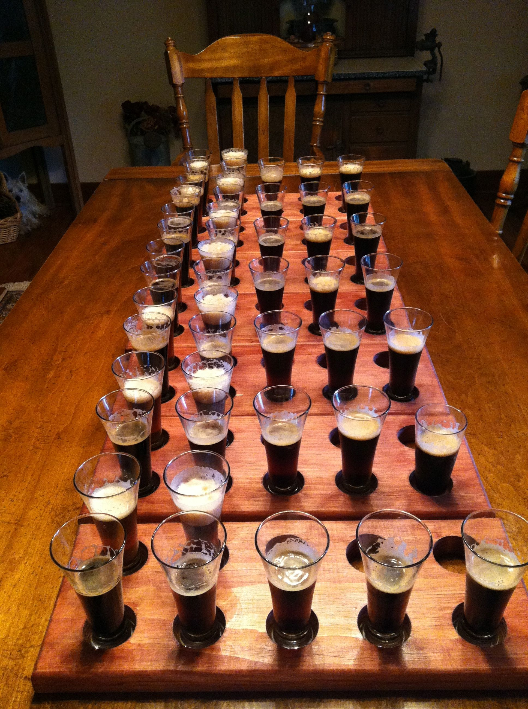

"Beer is proof that God loves us and wants us to be happy."
- Benjamin Franklin
2017 - What's Up?
2016 - Beer Madness – German Region
2015 - (Un)Happy Anniversary
2014 - Year of the Can
2013 - Year of the IPA (East Coast)

Date: Saturday, August 24, 2013
Participants (8): Aly, Andy, Bruce, Chris, Dean, Frank, Jeff, Justin
| Beer Name | Score (Rank) | Aly | Andy | Bruce | Chris | Dean | Frank | Jeff | Justin |
|---|---|---|---|---|---|---|---|---|---|
 Flying Fish Exit 16 (Andy) Flying Fish Exit 16 (Andy) |
31.5 - #1 | 5 | 5 | 5 | 3 | 5 | 1 | 3.5 | 3 |
 Three Heads Brewing - The Kind (Chris) Three Heads Brewing - The Kind (Chris) |
24.5 - #2 | 4.5 | 4 | 2 | 3 | 4 | 3 | 3 | 1 |
| Oskar Blues- Deviant Dale's IPA (Aly) | 23.5 - #3 | 3.5 | 4 | 3 | 3.5 | 5 | 1 | 2.5 | 1 |
 Terrapin - Hopsecutioner (Jeff) Terrapin - Hopsecutioner (Jeff) |
21.5 - #4 | 4 | 3 | 2 | 3 | 4 | 2 | 1.5 | 2 |
| Shipyard - Monkey Fist IPA (Bruce) | 21.0 - #5 | 1.5 | 4.5 | 1 | 3 | 3 | 2 | 3 | 3 |
| Fegley's BrewWorks - Hop'solutely (Justin) | 19.5 - #6 | 2 | 1 | 4 | 5 | 1 | 1 | 2.5 | 3 |
| Barrel Trolley - IPA (Frank) | 19 - #T7 | 2 | 3 | 2 | 4 | 3 | 1 | 3 | 1 |
| Green Man - IPA (Dean) | 19 - #T7 | 3 | 1 | 1 | 3 | 3 | 3 | 3 | 2 |
2012 - Year of the Porter

Date: Sunday, September 2, 2012
Participants (7): Aly, Andy, Bruce, Chris, Dean, Frank, Jeff
Candidates (1): Justin (Porter Presentation)
Resources: Beer Infographic, Porter Beer - Wikipedia
{kind=link}
| Beer Name | Score (Rank) | Aly | Andy | Bruce | Chris | Dean | Frank | Jeff |
|---|---|---|---|---|---|---|---|---|
 Saranac High Peaks Chocolate Orange (Aly) Saranac High Peaks Chocolate Orange (Aly) |
27 - #1 | 4 | 3 | 4 | 4 | 4 | 4 | 4 |
 Stone Smoked Porter w/Vanilla Bean (Andy) Stone Smoked Porter w/Vanilla Bean (Andy) |
23.5 - #2 | 5 | 5 | 3 | 3 | 2 | 3 | 2.5 |
| Fuller's London Porter (Bruce) | 21.5 - #3 | 3 | 4.5 | 1 | 3.5 | 3 | 3 | 3.5 |
| Deschutes Black Butte (Jeff) | 17.5 - #4 | 1 | 3.5 | 1 | 3 | 3 | 3 | 3 |
 Otter Creek Stovepipe Porter (Dean) Otter Creek Stovepipe Porter (Dean) |
15.5 - #5 | 1.5 | 1 | 2 | 3 | 2 | 2 | 4 |
 Sam Smith Taddy Porter (Chris) Sam Smith Taddy Porter (Chris) |
14 - #T6 | 1 | 2 | 2 | 4 | 1 | 2 | 3 |
 Crown Valley Brewing Plowboy Porter (Frank) Crown Valley Brewing Plowboy Porter (Frank) |
14 - #T6 | 2 | 4 | 1 | 1 | 3 | 1 | 2 |
2011 - Year of the Hefe "Wheat" Beer
Date: Sunday, September 4, 2011
Participants (7): Aly, Andy, Bruce, Chris, Dean, Frank, Jeff
2010 - Year of the Belgian-Style beer
Date: Saturday, September 4, 2010
Participants (7): Aly, Andy, Bruce, Chris, Dean, Frank, Jeff
Quick and Dirty Guide to Belgian Beer
2009 - Year of the Comfort Beer
Date: Saturday, September 5, 2009
Participants (7): Aly, Andy, Bruce, Chris, Dean, Frank, Jeff
2008 - Micro Brew Bonanza
No records.
2007 - World of Flavors
No records.
2006 - Impromptu Beer Tasting
No records. Same day of Hamburg Hamburger Festival.
2005 - Impromptu Beer Tasting
No records.